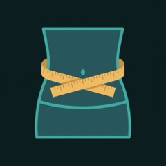
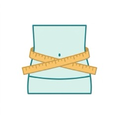
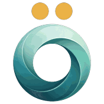

Чем вы взвешиваетесь?


На уровне пупкана выдохе, лента не давитутром, до едыраз в неделю
или скриншот из приложения весов


или скриншот из приложения весов

Eat smart. Train smart. Feel well.
ИИ-тренер по еде и залу прямо в Telegram
Расскажите о себе — тренер задаст пару вопросов и соберёт программу.
Программа идёт по кругу — с любого дня.
7 дней по половине подходов. Тренер включит сам, если веса падают.
Наведите камеру на штрихкод упаковки
Загружаю…
Загрузите фото во весь рост — ИИ покажет, как вы примерно будете выглядеть при другом весе и составе тела.
Нажмите на фото — откроется сравнение со шторкой
Картинка примерная: жир у каждого уходит по-своему. Талия считается по данным 2 635 взрослых, разброс ±30 %. Ниже безопасного веса и жира не рисуем.

Дневник еды (3 записи в день), нормы, зал, журнал, карта тела и рейтинг — бесплатно.
Выбранным — от 10 подходов в неделю, остальным 3–5 тяжёлых: держим, не теряем
От него зависит, каким шагом растут веса
Загружаем профиль… Пожалуйста, подождите.
Вес берётся из последнего замера — его вписываете на главной, под карточкой «Тело».
Анатомия на карте тела — body-muscles, Apache-2.0.
При болях в спине, шее или после травм — сначала к врачу.
Из этого тренер собирает меню и список покупок.
Что приложение показывает и о чём говорит тренер.
Как тренер пишет в чате, в напоминаниях и после записи еды и замеров. Сменить можно и словами в чате.
Специалист видит только то, что вы открыли. Каждый просмотр — в «Кто смотрел».
Тренер заново спросит о вас и соберёт программу.
Отправленные сообщения и копии фото у других останутся.